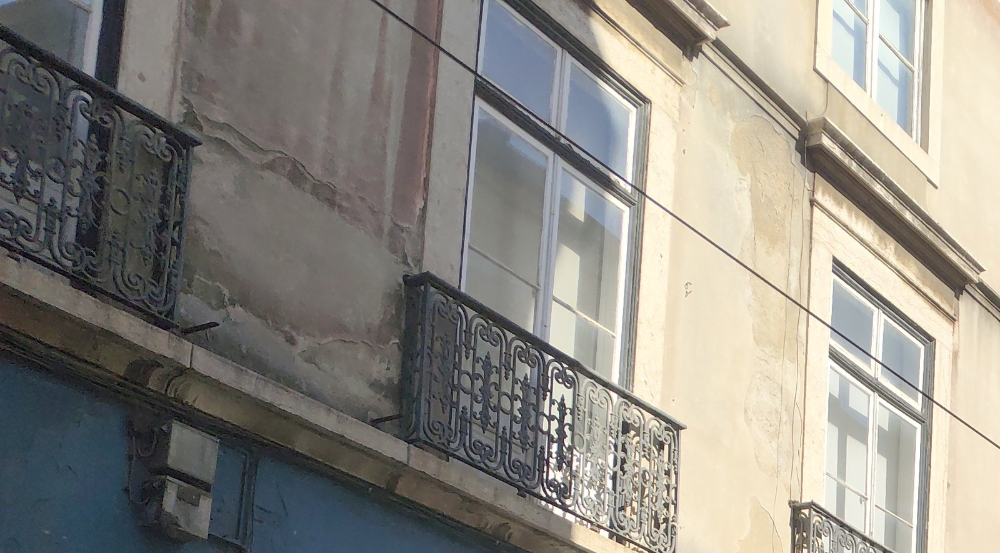

04Imagem, som e cidade
O que muda quando mudas o enquadramento?
A Rua da Boavista fica a dois passos da escola. Quem a olha de dentro, para o fundo, vê um caminho. Quem se põe de frente para três prédios de azulejo vê uma parede com ritmo. É a mesma rua.

Rua da Boavista, Lisboa. Fotografia: Arquivo da EPI, 2026.
Começa por aqui
Enquadrar a Boavista
Olhas a Rua da Boavista antes de levantar o telemóvel: o ponto de vista, as linhas, o ritmo, a luz e o corte. Depois decides qual das três imagens, todas boas, abre um vídeo curto sobre o bairro.
Abrir Enquadrar a BoavistaOu escolhe outra pergunta
O que ouves numa rua quando fechas os olhos?
Na Rua de São Paulo, fechas os olhos um minuto e escutas antes de gravar: o que está perto e o que está ao fundo, o que não para e o que acontece, de onde vem cada som.
Porque é que um prédio te parece mais bonito do que os outros?
Três prédios de azulejo lado a lado, na Rua da Boavista. Lês sobre o gosto e o juízo, sobre o que a forma faz aos olhos e sobre cinco passos para olhar devagar antes de julgar.
Quanto da nossa interpretação vem da imagem e quanto vem da legenda?
Uma equipa prepara uma pequena exposição com Mr e Mrs Andrews, de Thomas Gainsborough, e compara duas legendas. Escolhes, conheces informação nova e reves a decisão.
O que é que a fachada quer de ti?
Acima do portão da escola há um texto escrito à mão. Lês devagar, em inglês e em português, dezanove imperativos e uma afirmação.
Para aplicar
A cidade em voz e luz
Uma instalação de som e luz, feita por ti, a partir de «O Sentimento dum Ocidental», de Cesário Verde. A voz é a figura; a cidade gravada hoje, à porta da escola, é o fundo.
É para uma aula? Vai a A minha aula: Cidadania, módulo 1
Ver tudo neste tema
As páginas deste tema, por tipo. Algumas pertencem ao Laboratório ou aos módulos de Cidadania e aparecem aqui por ligação.
Ler a cidade
As 14 missões de Ler a cidade
- Quatro caminhos, uma escola
- O mapa que mente
- O jardim tem dois nomes
- O Tejo em três frases
- Uma rua com três vidas
- O mercado tem duas vidas
- O coelho está atrasado
- A cidade que Cesário poderia ver
- Três olhares sobre a mesma rua
- O Tejo responde?
- O pronome fugiu
- A fachada que te fala
- Enquadrar a Boavista
- Um minuto de olhos fechados
Olhar e julgar
- Estética
- Estética: descrever antes de julgar
- Lição 1: O gosto discute-se?
- Modos de ver
- Duas legendas, o mesmo quadro
- O artista e o designer
A escola na cidade
Oficinas de imagem, no Laboratório
- Da cena ao plano
- A dramaturgia do visível
- Texto e imagem
- O espaço expandido
- Ateliê-Laboratório: a régua, o fio e a hipótese
- Mesa de montagem
- A cena que falta